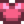
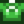

Jellies and Pickles
- For a detailed analysis of profit using the Preserves Jar, see Preserves Jar Productivity.
Jellies and Pickles can be produced by inserting either a fruit or a vegetable / foraged item in a preserves jar, respectively. The value of a single jar of jelly or pickles is equal to (2 * Base Crop Value + 50). Jelly and pickles are unaffected by the quality of the fruit or vegetable used.
A preserves jar requires 4000 minutes, or 2-3 days, to produce jelly or pickles.[1]
| Image | Name | Description | Ingredients | Recipe Source |
|---|---|---|---|---|
| Preserves Jar | Turns vegetables into pickles and fruit into jam. |
Products
Quality of ingredients makes no difference to the finished product. The value of the finished product is determined using the base value (i.e., with no silver or gold star) of the fruit/vegetable. However, the preserved version is always at least as profitable as even gold star produce, although the profit margin is lower compared to normal produce.
| Image | Name | Description | Ingredients | Processing Time | Sell Price | Energy / Health |
|---|---|---|---|---|---|---|
| Pickles | A jar of your home-made pickles. | Any vegetable (1) or any positive energy Forage (1) | ||||
| Jelly | Gooey. | Any fruit (1) |
Notes
- Pickles made from an inedible vegetable will instead give
 0.625 × Base Vegetable Price and
0.625 × Base Vegetable Price and  0.28125 × Base Vegetable Price.[2]
0.28125 × Base Vegetable Price.[2] - Jelly made from an inedible fruit will instead give 0.5 × Base Fruit Price and 0.225 × Base Fruit Price.[3]
- The following foraged items can be pickled: Wild Horseradish, Leek, Dandelion, Cave Carrot, Morel, Chanterelle, Spring Onion, Common Mushroom, Hazelnut, Winter Root, Snow Yam, Purple Mushroom, Ginger, and Magma Cap.
Gifting Jelly
| Villager Reactions
| |
|---|---|
| Like | |
| Hate | |
Gifting Pickles
| Villager Reactions
| |
|---|---|
| Love | |
| Like | |
| Dislike | |
| Hate | |
Bundles
Jelly is one of the options for the  Artisan Bundle in the Pantry.
Artisan Bundle in the Pantry.
Tailoring
Jelly is used in the spool of the Sewing Machine to create a Shirt. 
Pickles are used in the spool of the Sewing Machine to create a Shirt. 
Jelly can also be used as a red dye color at the dye pots in Emily's and Haley's house, located at 2 Willow Lane, and Pickles can be used as a green dye.
Quests
- One Jelly (of any type) or one Pickles (of any type) may be requested by Catfish, Rainbow Trout, Spook Fish, Super Cucumber, or Sturgeon in Fish Pond quests.
- One Jelly is requested by the Raccoon at the Giant Stump as part of his second request. It may also be requested as part of any request starting with the sixth.
- One Pickles is requested by the Raccoon at the Giant Stump as part of his fourth request. It may also be requested as part of any request starting with the sixth.
Trivia
- Jelly sold by the Traveling Cart will not be of any fruit type and will sell for
 160g (224g with the Artisan Profession).
160g (224g with the Artisan Profession). - Pickles sold by the Traveling Cart will not be of any vegetable type and will sell for 100g (140g with the Artisan Profession).
- The description of the Preserves Jar states that it makes Jam, but it actually produces Jelly.
References
History
- 1.4: Jas & Vincent no longer hate Jelly, they like it. Jellies and Pickles can now be used in Tailoring. Can be requested in Fish Pond quests.
- 1.6: Jellies and Pickles are now consumable. Positive energy foraged items can now be made into Pickles. Both Jelly and Pickles are now requested by the Raccoon.